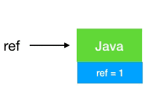

Java与C++之间有一堵由内存动态分配和垃圾收集技术所围成的高墙，外面的人想进来，里面的人想出去。
引用. 《深入理解JAVA虚拟机》 ↩
JAVA相对于C/C++而言引入了GC机制，使程序员更加去关注程序本身，不需要再对每个new的对象去进行delete/free操作。C++就好像你在家里自己恰饭，需要去自己做好。吃完之后还要自己收拾。而JAVA更像是在餐厅中吃饭，你不需要去关注饭是如何做好的，以及吃完以后服务员是如何收拾的，你只要负责享用美食就可以了。
JVM内存区域
了解GC之前，我们需要先了解JVM的内存模型，搞清楚被回收的数据一般存在在哪些区域。

- 虚拟机栈：描述方法执行时的内存模型，属于线程私有，生命周期同线程一样。主要保存执行方法时的局部变量表、操作数栈、动态连接和方法返回地址等信息,方法执行时入栈，方法执行完出栈，出栈之后数据清空，不需要GC。
- 本地方法栈：主要存储虚拟机调用native方法/服务相关信息。大体逻辑和虚拟机栈相同，也不需要GC。
- 程序技术器：主要记录当前线程执行字节码的行号。是
唯一一个在 Java 虚拟机规范中没有规定任何 OOM 情况的区域，所以也不需要GC。 - 本地内存：线程共享区域。在JAVA8之前，方法区是在堆内的实现的。受GC管理，JAVA8把方法区的实现移到了本地内存中的元空间。这样方法区就不受JVM控制，也不会进行GC，也提升了性能，因为发生 GC 会发生 Stop The Word,造成性能受到一定影响，也方便在元空间中统一管理。
- 堆：堆是GC 发生的主要区域，对象实例和数组都是在堆上分配的，GC 也主要对这两类数据进行回收。接下来我们也终点分析这块区域。
如何判断垃圾
引用计数法
简单来说就是对每个对象去添加一个引用计数器，每当有一个地方引用他，计数器就加一，当引用失效就减一。如果没有被引用（引用次数为 0），则此对象可回收。
1 | String ref = new String("Java"); |

ref 引用了右侧定义的对象，所以引用次数是 1
1 | ref = null; |
对象没被引用，引用次数置为 0，由于不被任何变量引用，此时即被回收

但单纯的引用计数无法解决对象之间的相互循环引用的问题。
1 | public class TestRCGC { |
虽然最后 a，b 都被置为 null 了，但是由于之前它们指向的对象互相指向了对方（引用计数都为 1），所以无法回收，也正是由于无法解决循环引用的问题，所以现代JAVA虚拟机都不用引用计数法来判断对象是否应该被回收。
可达性分析法
当前主流的内存管理系统基本都是采用的可达性分析算法来判定对象是否存活。它的原理是通过一系列“GC Roots”的根对象作为起始节点集。从这个节点开始，通过引用向下搜索，搜索过程走的路被称为“引用链”，如果对象到“GC Roots”之间没有引用链相连的话，则说明这个对象是不可达的，也就是死亡的。

如图所示：对象a和对象b之间，虽然存在循环引用，但是a，b之间不存在与GC Root想关联的引用，因此a,b是可回收的。
但是此时a,b并没有真正的死亡，而是处于一个“缓刑”的阶段。一个对象真正死亡需要同时满足两个条件，一个是对象与GC Roots没有相连接的引用链。另一个是对象是否有必要执行finallize()方法。如果对象未执行，则会先执行finallize()方法。如果执行该方法后对象仍不可达，则回收该对象，反之不回收该对象。
但是finallize只会被执行一次，如果在第一次执行了finallize之后对象仍然是可达的。那么下一次对象再被GC的时候会忽略finallize方法，会被回收。
那么这些 GC Roots 到底是什么东西呢，哪些对象可以作为 GC Root 呢，有以下几类
- 虚拟机栈（栈帧中的本地变量表）中引用的对象
- 方法区中类静态属性引用的对象
- 方法区中常量引用的对象
- 本地方法栈中 JNI（即一般说的 Native 方法）引用的对象
虚拟机栈中引用的对象
a 是栈帧中的本地变量，当 a = null 时，由于此时 a 充当了 GC Root 的作用，a 与原来指向的实例 new Test() 断开了连接，所以对象会被回收。
1 | public class Test { |
方法区中类静态属性引用对象
当栈帧中的本地变量 a = null 时，由于 a 原来指向的对象与 GC Root (变量 a) 断开了连接，所以 a 原来指向的对象会被回收，而由于我们给 s 赋值了变量的引用，s 在此时是类静态属性引用，充当了 GC Root 的作用，它指向的对象依然存活。
1 | public class Test { |
方法区中常量引用对象
常量 s 指向的对象并不会因为 a 指向的对象被回收而回收
1 | public class Test { |
本地方法栈中 JNI 引用的对象
本地方法就是一个 java 调用非 java 代码的接口，该方法并非 Java 实现的，可能由 C 或 Python等其他语言实现的， Java 通过 JNI 来调用本地方法， 而本地方法是以库文件的形式存放的（在 WINDOWS 平台上是 DLL 文件形式，在 UNIX 机器上是 SO 文件形式）。通过调用本地的库文件的内部方法，使 JAVA 可以实现和本地机器的紧密联系，调用系统级的各接口方法。
当调用 Java 方法时，虚拟机会创建一个栈桢并压入 Java 栈，而当它调用的是本地方法时，虚拟机会保持 Java 栈不变，不会在 Java 栈祯中压入新的祯，虚拟机只是简单地动态连接并直接调用指定的本地方法。

1 | JNIEXPORT void JNICALL Java_com_pecuyu_jnirefdemo_MainActivity_newStringNative(JNIEnv *env, jobject instance，jstring jmsg) { |
当 java 调用以上本地方法时，jc 会被本地方法栈压入栈中, jc 就是我们说的本地方法栈中 JNI 的对象引用，因此只会在此本地方法执行完成后才会被释放。
垃圾回收算法
标记清除算法
先根据可达性算法标记出相应的可回收对象，对可回收的对象进行回收。
这种方式很简单，但是会有一个特别明显的问题，当大量的小对象死亡时，标记清除出来的碎片化空间就特别多。那么我们如何能获得一个连续内存空间呢？
标记整理法
两步和标记清除法一样，不同的是它在标记清除法的基础上添加了一个整理的过程 ，即将所有的存活对象都往一端移动,紧邻排列，这样就可以解决碎片化空间的问题。
这种算法的缺点是每进一次垃圾清除都要频繁地移动存活的对象，效率十分低下。
复制算法
把堆等分成两块区域, A 和 B，区域 A 负责分配对象，区域 B 不分配, 对区域 A 使用以上所说的标记法把存活的对象标记出来（下图有误无需清除），然后把区域 A 中存活的对象都复制到区域 B（存活对象都依次紧邻排列）最后把 A 区对象全部清理掉释放出空间。
复制算法的缺点是比如给堆分配分配的内存只有一半是可用的，另外每次回收也要把存活对象移动到另一半，效率低下。
分代收集算法
分代收集算法整合了以上算法，综合了这些算法的优点，最大程度避免了它们的缺点，所以是现代虚拟机采用的首选算法,与其说它是算法，倒不是说它是一种策略，因为它是把上述几种算法整合在了一起，为啥需要分代收集呢，来看一下对象的分配有啥规律
如图示：纵轴代表已分配的字节，而横轴代表程序运行时间
由图可知，大部分的对象都很短命，都在很短的时间内都被回收了（IBM 专业研究表明，一般来说，98% 的对象都是朝生夕死的，经过一次 Minor GC 后就会被回收），所以分代收集算法根据对象存活周期的不同将堆分成新生代和老生代（Java8以前还有个永久代）,默认比例为 1 : 2，新生代又分为 Eden 区， from Survivor 区（简称S0），to Survivor 区(简称 S1),三者的比例为 8: 1 : 1，这样就可以根据新老生代的特点选择最合适的垃圾回收算法，我们把新生代发生的 GC 称为 Young GC（也叫 Minor GC）,老年代发生的 GC 称为 Old GC（也称为 Full GC）。
分代收集工作原理
1、对象在新生代的分配与回收
由以上的分析可知，大部分对象在很短的时间内都会被回收，对象一般分配在 Eden 区

当 Eden 区将满时，触发 Minor GC
我们之前怎么说来着，大部分对象在短时间内都会被回收, 所以经过 Minor GC 后只有少部分对象会存活，它们会被移到 S0 区（这就是为啥空间大小 Eden: S0: S1 = 8:1:1, Eden 区远大于 S0,S1 的原因，因为在 Eden 区触发的 Minor GC 把大部对象（接近98%）都回收了,只留下少量存活的对象，此时把它们移到 S0 或 S1 绰绰有余）同时对象年龄加一（对象的年龄即发生 Minor GC 的次数），最后把 Eden 区对象全部清理以释放出空间,动图如下

当触发下一次 Minor GC 时，会把 Eden 区的存活对象和 S0（或S1） 中的存活对象（S0 或 S1 中的存活对象经过每次 Minor GC 都可能被回收）一起移到 S1（Eden 和 S0 的存活对象年龄+1）, 同时清空 Eden 和 S0 的空间。
若再触发下一次 Minor GC，则重复上一步，只不过此时变成了 从 Eden，S1 区将存活对象复制到 S0 区,每次垃圾回收, S0, S1 角色互换，都是从 Eden ,S0(或S1) 将存活对象移动到 S1(或S0)。也就是说在 Eden 区的垃圾回收我们采用的是复制算法，因为在 Eden 区分配的对象大部分在 Minor GC 后都消亡了，只剩下极少部分存活对象（这也是为啥 Eden:S0:S1 默认为 8:1:1 的原因），S0,S1 区域也比较小，所以最大限度地降低了复制算法造成的对象频繁拷贝带来的开销。
2、对象何时晋升老年代
- 当对象的年龄达到了我们设定的阈值，则会从S0（或S1）晋升到老年代
 如图示：年龄阈值设置为 15， 当发生下一次 Minor GC 时，S0 中有个对象年龄达到 15，达到我们的设定阈值，晋升到老年代！
如图示：年龄阈值设置为 15， 当发生下一次 Minor GC 时，S0 中有个对象年龄达到 15，达到我们的设定阈值，晋升到老年代！ - 大对象 当某个对象分配需要大量的连续内存时，此时对象的创建不会分配在 Eden 区，会直接分配在老年代，因为如果把大对象分配在 Eden 区, Minor GC 后再移动到 S0,S1 会有很大的开销（对象比较大，复制会比较慢，也占空间），也很快会占满 S0,S1 区，所以干脆就直接移到老年代.
- 还有一种情况也会让对象晋升到老年代，即在 S0（或S1） 区相同年龄的对象大小之和大于 S0（或S1）空间一半以上时，则年龄大于等于该年龄的对象也会晋升到老年代。
3、空间分配担保
在发生 MinorGC 之前，虚拟机会先检查老年代最大可用的连续空间是否大于新生代所有对象的总空间，如果大于，那么Minor GC 可以确保是安全的,如果不大于，那么虚拟机会查看 HandlePromotionFailure 设置值是否允许担保失败。如果允许，那么会继续检查老年代最大可用连续空间是否大于历次晋升到老年代对象的平均大小，如果大于则进行 Minor GC，否则可能进行一次 Full GC。
4、Stop The World
如果老年代满了，会触发 Full GC, Full GC 会同时回收新生代和老年代（即对整个堆进行GC），它会导致 Stop The World（简称 STW）,造成挺大的性能开销。
什么是 STW ？所谓的 STW, 即在 GC（minor GC 或 Full GC）期间，只有垃圾回收器线程在工作，其他工作线程则被挂起。
画外音：为啥在垃圾收集期间其他工作线程会被挂起？想象一下，你一边在收垃圾，另外一群人一边丢垃圾，垃圾能收拾干净吗。
一般 Full GC 会导致工作线程停顿时间过长（因为Full GC 会清理整个堆中的不可用对象，一般要花较长的时间），如果在此 server 收到了很多请求，则会被拒绝服务！所以我们要尽量减少 Full GC（Minor GC 也会造成 STW,但只会触发轻微的 STW,因为 Eden 区的对象大部分都被回收了，只有极少数存活对象会通过复制算法转移到 S0 或 S1 区，所以相对还好）。
现在我们应该明白把新生代设置成 Eden, S0，S1区或者给对象设置年龄阈值或者默认把新生代与老年代的空间大小设置成 1:2 都是为了尽可能地避免对象过早地进入老年代，尽可能晚地触发 Full GC。想想新生代如果只设置 Eden 会发生什么，后果就是每经过一次 Minor GC，存活对象会过早地进入老年代，那么老年代很快就会装满，很快会触发 Full GC，而对象其实在经过两三次的 Minor GC 后大部分都会消亡，所以有了 S0,S1的缓冲，只有少数的对象会进入老年代，老年代大小也就不会这么快地增长，也就避免了过早地触发 Full GC。
由于 Full GC（或Minor GC） 会影响性能，所以我们要在一个合适的时间点发起 GC，这个时间点被称为 Safe Point，这个时间点的选定既不能太少以让 GC 时间太长导致程序过长时间卡顿，也不能过于频繁以至于过分增大运行时的负荷。一般当线程在这个时间点上状态是可以确定的，如确定 GC Root 的信息等，可以使 JVM 开始安全地 GC。Safe Point 主要指的是以下特定位置：
- 循环的末尾
- 方法返回前
- 调用方法的 call 之后
- 抛出异常的位置 另外需要注意的是由于新生代的特点（大部分对象经过 Minor GC后会消亡）， Minor GC 用的是复制算法，而在老生代由于对象比较多，占用的空间较大，使用复制算法会有较大开销（复制算法在对象存活率较高时要进行多次复制操作，同时浪费一半空间）所以根据老生代特点，在老年代进行的 GC 一般采用的是标记整理法来进行回收。
垃圾收集器种类
如果说收集算法是内存回收的方法论，那么垃圾收集器就是内存回收的具体实现。Java 虚拟机规范并没有规定垃圾收集器应该如何实现，因此一般来说不同厂商，不同版本的虚拟机提供的垃圾收集器实现可能会有差别，一般会给出参数来让用户根据应用的特点来组合各个年代使用的收集器，主要有以下垃圾收集器
- 在新生代工作的垃圾回收器：Serial, ParNew, ParallelScavenge
- 在老年代工作的垃圾回收器：CMS，Serial Old, Parallel Old
- 同时在新老生代工作的垃圾回收器：G1
图片中的垃圾收集器如果存在连线，则代表它们之间可以配合使用，接下来我们来看看各个垃圾收集器的具体功能。
新生代收集器
Serial 收集器
Serial 收集器是工作在新生代的，单线程的垃圾收集器，单线程意味着它只会使用一个 CPU 或一个收集线程来完成垃圾回收，不仅如此，还记得我们上文提到的 STW 了吗，它在进行垃圾收集时，其他用户线程会暂停，直到垃圾收集结束，也就是说在 GC 期间，此时的应用不可用。
看起来单线程垃圾收集器不太实用，不过我们需要知道的任何技术的使用都不能脱离场景，在 Client 模式下，它简单有效（与其他收集器的单线程比），对于限定单个 CPU 的环境来说，Serial 单线程模式无需与其他线程交互，减少了开销，专心做 GC 能将其单线程的优势发挥到极致，另外在用户的桌面应用场景，分配给虚拟机的内存一般不会很大，收集几十甚至一两百兆（仅是新生代的内存，桌面应用基本不会再大了），STW 时间可以控制在一百多毫秒内，只要不是频繁发生，这点停顿是可以接受的，所以对于运行在 Client 模式下的虚拟机，Serial 收集器是新生代的默认收集器
ParNew 收集器
ParNew 收集器是 Serial 收集器的多线程版本，除了使用多线程，其他像收集算法,STW,对象分配规则，回收策略与 Serial 收集器完成一样，在底层上，这两种收集器也共用了相当多的代码，它的垃圾收集过程如下
ParNew 主要工作在 Server 模式，我们知道服务端如果接收的请求多了，响应时间就很重要了，多线程可以让垃圾回收得更快，也就是减少了 STW 时间，能提升响应时间，所以是许多运行在 Server 模式下的虚拟机的首选新生代收集器，另一个与性能无关的原因是因为除了 Serial 收集器，只有它能与 CMS 收集器配合工作，CMS 是一个划时代的垃圾收集器，是真正意义上的并发收集器，它第一次实现了垃圾收集线程与用户线程（基本上）同时工作，它采用的是传统的 GC 收集器代码框架，与 Serial,ParNew 共用一套代码框架，所以能与这两者一起配合工作，而后文提到的 Parallel Scavenge 与 G1 收集器没有使用传统的 GC 收集器代码框架，而是另起炉灶独立实现的，另外一些收集器则只是共用了部分的框架代码,所以无法与 CMS 收集器一起配合工作。
在多 CPU 的情况下，由于 ParNew 的多线程回收特性，毫无疑问垃圾收集会更快，也能有效地减少 STW 的时间，提升应用的响应速度。
Parallel Scavenge 收集器
Parallel Scavenge 收集器也是一个使用复制算法，多线程，工作于新生代的垃圾收集器，看起来功能和 ParNew 收集器一样，它有啥特别之处吗
关注点不同，CMS 等垃圾收集器关注的是尽可能缩短垃圾收集时用户线程的停顿时间，而 Parallel Scavenge 目标是达到一个可控制的吞吐量（吞吐量 = 运行用户代码时间 / （运行用户代码时间+垃圾收集时间）），也就是说 CMS 等垃圾收集器更适合用到与用户交互的程序，因为停顿时间越短，用户体验越好，而 Parallel Scavenge 收集器关注的是吞吐量，所以更适合做后台运算等不需要太多用户交互的任务。
Parallel Scavenge 收集器提供了两个参数来精确控制吞吐量，分别是控制最大垃圾收集时间的 -XX:MaxGCPauseMillis 参数及直接设置吞吐量大小的 -XX:GCTimeRatio（默认99%）
除了以上两个参数，还可以用 Parallel Scavenge 收集器提供的第三个参数 -XX:UseAdaptiveSizePolicy，开启这个参数后，就不需要手工指定新生代大小,Eden 与 Survivor 比例（SurvivorRatio）等细节，只需要设置好基本的堆大小（-Xmx 设置最大堆）,以及最大垃圾收集时间与吞吐量大小，虚拟机就会根据当前系统运行情况收集监控信息，动态调整这些参数以尽可能地达到我们设定的最大垃圾收集时间或吞吐量大小这两个指标。自适应策略也是 Parallel Scavenge 与 ParNew 的重要区别！
老年代收集器
Serial Old 收集器
上文我们知道， Serial 收集器是工作于新生代的单线程收集器，与之相对地，Serial Old 是工作于老年代的单线程收集器，此收集器的主要意义在于给 Client 模式下的虚拟机使用，如果在 Server 模式下，则它还有两大用途：一种是在 JDK 1.5 及之前的版本中与 Parallel Scavenge 配合使用，另一种是作为 CMS 收集器的后备预案,在并发收集发生 Concurrent Mode Failure 时使用（后文讲述）,它与 Serial 收集器配合使用示意图如下
Parallel Old 收集器
Parallel Old 是相对于 Parallel Scavenge 收集器的老年代版本，使用多线程和标记整理法，两者组合示意图如下,这两者的组合由于都是多线程收集器，真正实现了「吞吐量优先」的目标
CMS 收集器
CMS 收集器是以实现最短 STW 时间为目标的收集器，如果应用很重视服务的响应速度，希望给用户最好的体验，则 CMS 收集器是个很不错的选择！
我们之前说老年代主要用标记整理法，而 CMS 虽然工作于老年代，但采用的是标记清除法，主要有以下四个步骤
- 初始标记
- 并发标记
- 重新标记
- 并发清除
从图中可以的看到初始标记和重新标记两个阶段会发生 STW，造成用户线程挂起，不过初始标记仅标记 GC Roots 能关联的对象，速度很快，并发标记是进行 GC Roots Tracing 的过程，重新标记是为了修正并发标记期间因用户线程继续运行而导致标记产生变动的那一部分对象的标记记录，这一阶段停顿时间一般比初始标记阶段稍长，但远比并发标记时间短。
整个过程中耗时最长的是并发标记和标记清理，不过这两个阶段用户线程都可工作，所以不影响应用的正常使用，所以总体上看，可以认为 CMS 收集器的内存回收过程是与用户线程一起并发执行的。
但是 CMS 收集器远达不到完美的程度，主要有以下三个缺点
- CMS 收集器对 CPU 资源非常敏感 原因也可以理解，比如本来我本来可以有 10 个用户线程处理请求，现在却要分出 3 个作为回收线程，吞吐量下降了30%，CMS 默认启动的回收线程数是 （CPU数量+3）/ 4, 如果 CPU 数量只有一两个，那吞吐量就直接下降 50%,显然是不可接受的
- CMS 无法处理浮动垃圾（Floating Garbage）,可能出现 「Concurrent Mode Failure」而导致另一次 Full GC 的产生，由于在并发清理阶段用户线程还在运行，所以清理的同时新的垃圾也在不断出现，这部分垃圾只能在下一次 GC 时再清理掉（即浮云垃圾），同时在垃圾收集阶段用户线程也要继续运行，就需要预留足够多的空间要确保用户线程正常执行，这就意味着 CMS 收集器不能像其他收集器一样等老年代满了再使用，JDK 1.5 默认当老年代使用了68%空间后就会被激活，当然这个比例可以通过 -XX:CMSInitiatingOccupancyFraction 来设置，但是如果设置地太高很容易导致在 CMS 运行期间预留的内存无法满足程序要求，会导致 Concurrent Mode Failure 失败，这时会启用 Serial Old 收集器来重新进行老年代的收集，而我们知道 Serial Old 收集器是单线程收集器，这样就会导致 STW 更长了。
- CMS 采用的是标记清除法，上文我们已经提到这种方法会产生大量的内存碎片，这样会给大内存分配带来很大的麻烦，如果无法找到足够大的连续空间来分配对象，将会触发 Full GC，这会影响应用的性能。当然我们可以开启 -XX:+UseCMSCompactAtFullCollection（默认是开启的），用于在 CMS 收集器顶不住要进行 FullGC 时开启内存碎片的合并整理过程，内存整理会导致 STW，停顿时间会变长，还可以用另一个参数 -XX:CMSFullGCsBeforeCompation 用来设置执行多少次不压缩的 Full GC 后跟着带来一次带压缩的。
G1（Garbage First） 收集器
G1 收集器是面向服务端的垃圾收集器，被称为驾驭一切的垃圾回收器，主要有以下几个特点
像 CMS 收集器一样，能与应用程序线程并发执行。
整理空闲空间更快。
需要 GC 停顿时间更好预测。
不会像 CMS 那样牺牲大量的吞吐性能。
不需要更大的 Java Heap
与 CMS 相比，它在以下两个方面表现更出色
- 运作期间不会产生内存碎片，G1 从整体上看采用的是标记-整理法，局部（两个 Region）上看是基于复制算法实现的，两个算法都不会产生内存碎片，收集后提供规整的可用内存，这样有利于程序的长时间运行。
- 在 STW 上建立了可预测的停顿时间模型，用户可以指定期望停顿时间，G1 会将停顿时间控制在用户设定的停顿时间以内。
为什么G1能建立可预测的停顿模型呢，主要原因在于 G1 对堆空间的分配与传统的垃圾收集器不一器，传统的内存分配就像我们前文所述，是连续的，分成新生代，老年代，新生代又分 Eden,S0,S1,如下
而 G1 各代的存储地址不是连续的，每一代都使用了 n 个不连续的大小相同的 Region，每个Region占有一块连续的虚拟内存地址，如图示
除了和传统的新老生代，幸存区的空间区别，Region还多了一个H，它代表Humongous，这表示这些Region存储的是巨大对象（humongous object，H-obj），即大小大于等于region一半的对象，这样超大对象就直接分配到了老年代，防止了反复拷贝移动。那么 G1 分配成这样有啥好处呢？
传统的收集器如果发生 Full GC 是对整个堆进行全区域的垃圾收集，而分配成各个 Region 的话，方便 G1 跟踪各个 Region 里垃圾堆积的价值大小（回收所获得的空间大小及回收所需经验值），这样根据价值大小维护一个优先列表，根据允许的收集时间，优先收集回收价值最大的 Region,也就避免了整个老年代的回收，也就减少了 STW 造成的停顿时间。同时由于只收集部分 Region,可就做到了 STW 时间的可控。
G1 收集器的工作步骤如下
- 初始标记
- 并发标记
- 最终标记
- 筛选回收
可以看到整体过程与 CMS 收集器非常类似，筛选阶段会根据各个 Region 的回收价值和成本进行排序，根据用户期望的 GC 停顿时间来制定回收计划。

...
...